CODING AGENTS AS PIXEL WORLD MODELS
traex/GPT-5.6-Sol · 0174
点击播放 · 原生 RGB 像素
逐轮保存的候选
回放视频、检查图与代码变化。
每份候选均可单独播放。实际图片检查记录在下方工具轨迹中。
候选 01播放与检查图
点击播放 · 原生 RGB 像素

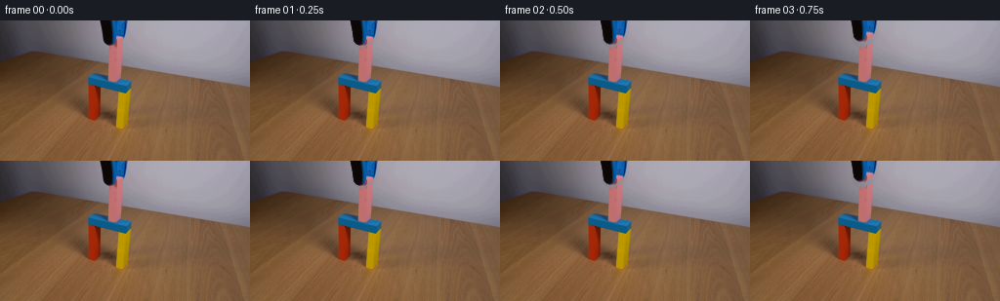
展开代码变化
--- 上一保存版本 +++ 本次保存版本 @@ -0,0 +1,141 @@ +"""Generate the requested locked-camera block demonstration. + +The photographed source frame already shows the pink block at rest, just as +the grabber is releasing it. This generator keeps the photographed scene +intact, cleanly reconstructs the small patch of wall revealed by the rising +grabber, and moves the two visible padded fingers upward with an eased, +real-time motion. +""" + +from pathlib import Path + +import cv2 +import numpy as np + +import artifact_io + + +ROOT = Path(__file__).resolve().parent + + +def _soft_component_mask(bgr): + """Segment only the two upper grabber fingers (not the blue gate).""" + hsv = cv2.cvtColor(bgr, cv2.COLOR_BGR2HSV) + yy, xx = np.indices(hsv.shape[:2]) + + # The black rubber finger. Its antialiased edge is included by taking the + # connected dark object at the top, constrained to the known upper tool. + dark = ((hsv[..., 2] < 92) & (xx >= 98) & (xx <= 121) & (yy < 32)) + n, labels, stats, _ = cv2.connectedComponentsWithStats(dark.astype(np.uint8)) + black = np.zeros_like(dark) + for i in range(1, n): + x, y, w, h, area = stats[i] + if y == 0 and area > 100: + black |= labels == i + + # Saturated blue finger at upper center. Spatial restrictions explicitly + # exclude the gate's horizontal blue lintel lower in the image. + blue_seed = ((hsv[..., 0] >= 92) & (hsv[..., 0] <= 116) & + (hsv[..., 1] > 85) & (hsv[..., 2] > 45) & + (xx >= 109) & (xx <= 134) & (yy < 31)) + n, labels, stats, _ = cv2.connectedComponentsWithStats(blue_seed.astype(np.uint8)) + blue = np.zeros_like(blue_seed) + for i in range(1, n): + x, y, w, h, area = stats[i] + if y == 0 and area > 100: + blue |= labels == i + + core = (black | blue).astype(np.uint8) * 255 + + # A hand-tuned silhouette fills dark/low-saturation interior pixels and + # captures the naturally rounded lower tip. The seed still controls all + # edges, so no unrelated wall or pink block pixels enter the sprite. + silhouette = np.zeros_like(core) + poly = np.array([[103, 0], [131, 0], [128, 15], [124, 21], [120, 22], + [117, 25], [111, 25], [108, 23], [106, 20]], np.int32) + cv2.fillPoly(silhouette, [poly], 255) + core = cv2.bitwise_or(core, silhouette) + + # Keep a crisp photographic center and a one-pixel antialiased boundary. + alpha = cv2.GaussianBlur(core, (0, 0), 0.55).astype(np.float32) / 255.0 + alpha[core > 0] = np.maximum(alpha[core > 0], 0.96) + return np.clip(alpha, 0, 1) + + +def _wall_plate(first, alpha): + """Reconstruct the wall behind the tool with local texture and shading.""" + h, w = alpha.shape + wall = first.astype(np.float32).copy() + + # The unobscured wall surrounding the tool is exceptionally smooth. A + # local affine RGB fit captures its gentle left/right and top/down light + # gradients while robustly rejecting any colored foreground pixels. + yy, xx = np.indices((h, w)) + hsv = cv2.cvtColor(first, cv2.COLOR_RGB2HSV) + samples = ((yy < 42) & (xx >= 82) & (xx <= 151) & + (hsv[..., 1] < 42) & (alpha < .02)) + A = np.column_stack([np.ones(samples.sum()), xx[samples], yy[samples], + xx[samples] * yy[samples]]) + for c in range(3): + coef, *_ = np.linalg.lstsq(A, first[..., c][samples], rcond=None) + wall[..., c] = (coef[0] + coef[1] * xx + coef[2] * yy + + coef[3] * xx * yy) + + # Match the very subtle camera texture; deterministic noise avoids a + # conspicuously flat synthetic patch as progressively more wall appears. + rng = np.random.default_rng(174) + noise = cv2.GaussianBlur(rng.normal(0, .75, (h, w)).astype(np.float32), + (0, 0), .65) + wall += noise[..., None] + return np.clip(wall, 0, 255).astype(np.uint8) + + +def _translate_rgba(rgb, alpha, dy): + """Translate a premultiplied sprite vertically without wraparound.""" + h, w = alpha.shape + M = np.float32([[1, 0, 0], [0, 1, -dy]]) + premul = rgb.astype(np.float32) * alpha[..., None] + p = cv2.warpAffine(premul, M, (w, h), flags=cv2.INTER_LINEAR, + borderMode=cv2.BORDER_CONSTANT, borderValue=0) + a = cv2.warpAffine(alpha, M, (w, h), flags=cv2.INTER_LINEAR, + borderMode=cv2.BORDER_CONSTANT, borderValue=0) + return p, a + + +def generate(): + first = cv2.cvtColor(cv2.imread(str(ROOT / "first_frame.png")), + cv2.COLOR_BGR2RGB) + alpha = _soft_component_mask(cv2.cvtColor(first, cv2.COLOR_RGB2BGR)) + wall = _wall_plate(first, alpha) + + # Background with the original tool removed. A slight dilation covers its + # antialiased fringe; only this compact upper-wall area is affected. + remove = cv2.dilate((alpha > .03).astype(np.uint8), np.ones((3, 3), np.uint8)) + remove = cv2.GaussianBlur(remove.astype(np.float32), (0, 0), .75) + clean = (first * (1 - remove[..., None]) + wall * remove[..., None]) + + frames = [first.copy()] + for i in range(1, 20): + # 0.25 s settling pause, then a smooth deliberate upward withdrawal. + # The tool has cleared the frame at roughly 2.5 seconds; the remaining + # hold makes the stable completed experiment easy to inspect. + u = np.clip((i - 1) / 9.0, 0.0, 1.0) + smooth = u * u * (3.0 - 2.0 * u) + dy = 34.0 * smooth + sprite, moved_alpha = _translate_rgba(first, alpha, dy) + frame = clean * (1 - moved_alpha[..., None]) + sprite + + # Preserve every pixel outside the tiny union of old/new grabber + # footprintsâespecially the pink block and colorful support structure. + union = np.maximum(remove, (moved_alpha > .01).astype(np.float32)) + frame = first * (1 - union[..., None]) + frame * union[..., None] + frames.append(np.clip(frame + .5, 0, 255).astype(np.uint8)) + + frames = np.stack(frames).astype(np.uint8) + # Contract-critical exact identity of frame zero. + assert np.array_equal(frames[0], first) + return frames + + +if __name__ == "__main__": + artifact_io.save(generate(), ROOT)
候选 02播放与检查图
点击播放 · 原生 RGB 像素
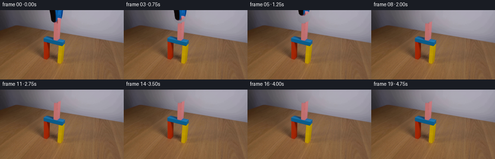
展开代码变化
--- 上一保存版本
+++ 本次保存版本
@@ -25,7 +25,8 @@
# The black rubber finger. Its antialiased edge is included by taking the
# connected dark object at the top, constrained to the known upper tool.
- dark = ((hsv[..., 2] < 92) & (xx >= 98) & (xx <= 121) & (yy < 32))
+ dark = ((hsv[..., 2] < 135) & (hsv[..., 1] < 175) &
+ (xx >= 98) & (xx <= 121) & (yy < 32))
n, labels, stats, _ = cv2.connectedComponentsWithStats(dark.astype(np.uint8))
black = np.zeros_like(dark)
for i in range(1, n):
@@ -35,8 +36,8 @@
# Saturated blue finger at upper center. Spatial restrictions explicitly
# exclude the gate's horizontal blue lintel lower in the image.
- blue_seed = ((hsv[..., 0] >= 92) & (hsv[..., 0] <= 116) &
- (hsv[..., 1] > 85) & (hsv[..., 2] > 45) &
+ blue_seed = ((hsv[..., 0] >= 92) & (hsv[..., 0] <= 122) &
+ (hsv[..., 1] > 32) & (hsv[..., 2] > 35) &
(xx >= 109) & (xx <= 134) & (yy < 31))
n, labels, stats, _ = cv2.connectedComponentsWithStats(blue_seed.astype(np.uint8))
blue = np.zeros_like(blue_seed)
@@ -45,21 +46,10 @@
if y == 0 and area > 100:
blue |= labels == i
- core = (black | blue).astype(np.uint8) * 255
-
- # A hand-tuned silhouette fills dark/low-saturation interior pixels and
- # captures the naturally rounded lower tip. The seed still controls all
- # edges, so no unrelated wall or pink block pixels enter the sprite.
- silhouette = np.zeros_like(core)
- poly = np.array([[103, 0], [131, 0], [128, 15], [124, 21], [120, 22],
- [117, 25], [111, 25], [108, 23], [106, 20]], np.int32)
- cv2.fillPoly(silhouette, [poly], 255)
- core = cv2.bitwise_or(core, silhouette)
-
- # Keep a crisp photographic center and a one-pixel antialiased boundary.
- alpha = cv2.GaussianBlur(core, (0, 0), 0.55).astype(np.float32) / 255.0
- alpha[core > 0] = np.maximum(alpha[core > 0], 0.96)
- return np.clip(alpha, 0, 1)
+ # Classified edge pixels already contain the camera's antialiasing, so a
+ # crisp matte moves them faithfully and, importantly, never captures the
+ # adjacent pink block at the instant of release.
+ return (black | blue).astype(np.float32)
def _wall_plate(first, alpha):
@@ -108,10 +98,10 @@
alpha = _soft_component_mask(cv2.cvtColor(first, cv2.COLOR_RGB2BGR))
wall = _wall_plate(first, alpha)
- # Background with the original tool removed. A slight dilation covers its
- # antialiased fringe; only this compact upper-wall area is affected.
- remove = cv2.dilate((alpha > .03).astype(np.uint8), np.ones((3, 3), np.uint8))
- remove = cv2.GaussianBlur(remove.astype(np.float32), (0, 0), .75)
+ # Background with the original tool removed. The color-aware matte already
+ # includes the photographed edge pixels and deliberately does not dilate
+ # into the pink block directly touching the jaws.
+ remove = alpha.copy()
clean = (first * (1 - remove[..., None]) + wall * remove[..., None])
frames = [first.copy()]
候选 03播放与检查图
候选 04播放与检查图
点击播放 · 原生 RGB 像素
展开代码变化
--- 上一保存版本
+++ 本次保存版本
@@ -46,6 +46,19 @@
if y == 0 and area > 100:
blue |= labels == i
+ # Fill tiny printed highlights/texture holes inside each finger silhouette.
+ # Those pixels must travel with the tool rather than remain as marks on the
+ # newly exposed wall.
+ for component in (black, blue):
+ contours, _ = cv2.findContours(component.astype(np.uint8),
+ cv2.RETR_EXTERNAL,
+ cv2.CHAIN_APPROX_SIMPLE)
+ cv2.drawContours(component.astype(np.uint8), contours, -1, 1,
+ thickness=cv2.FILLED)
+ filled = np.zeros_like(component, dtype=np.uint8)
+ cv2.drawContours(filled, contours, -1, 1, thickness=cv2.FILLED)
+ component[:] = filled.astype(bool)
+
# Classified edge pixels already contain the camera's antialiasing, so a
# crisp matte moves them faithfully and, importantly, never captures the
# adjacent pink block at the instant of release.
@@ -92,6 +105,37 @@
return p, a
+def _restore_occluded_block(clean, remove):
+ """Complete the few pink top pixels originally hidden by the jaws."""
+ h, w = remove.shape
+ yy, xx = np.indices((h, w))
+ top = np.zeros((h, w), np.uint8)
+ front = np.zeros((h, w), np.uint8)
+ # Perspective-consistent top and front faces inferred from all visible
+ # edges of the photographed cuboid.
+ cv2.fillConvexPoly(top, np.array([[118, 17], [128, 19], [124, 27],
+ [111, 25]], np.int32), 1)
+ cv2.fillConvexPoly(front, np.array([[111, 24], [124, 26], [123, 63],
+ [110, 60]], np.int32), 1)
+
+ layer = clean.copy()
+ # Gentle planes reproduce the original directional light and avoid a flat
+ # painted patch. Values are sampled from the adjacent visible pink faces.
+ top_rgb = np.stack([190 + .95 * (xx - 111) + .08 * yy,
+ 108 + .85 * (xx - 111) + .06 * yy,
+ 118 + 1.05 * (xx - 111) + .06 * yy], axis=-1)
+ front_rgb = np.stack([194 - .10 * (yy - 26) + .28 * (xx - 112),
+ 112 - .08 * (yy - 26) + .20 * (xx - 112),
+ 112 - .04 * (yy - 26) + .25 * (xx - 112)], axis=-1)
+ layer[top.astype(bool)] = top_rgb[top.astype(bool)]
+ layer[front.astype(bool)] = front_rgb[front.astype(bool)]
+
+ # Only replace pixels actually hidden by the grabber; every already-visible
+ # photographed block pixel remains untouched.
+ hidden_block = ((top | front).astype(np.float32) * remove)[..., None]
+ return clean * (1 - hidden_block) + layer * hidden_block
+
+
def generate():
first = cv2.cvtColor(cv2.imread(str(ROOT / "first_frame.png")),
cv2.COLOR_BGR2RGB)
@@ -103,6 +147,7 @@
# into the pink block directly touching the jaws.
remove = alpha.copy()
clean = (first * (1 - remove[..., None]) + wall * remove[..., None])
+ clean = _restore_occluded_block(clean, remove)
frames = [first.copy()]
for i in range(1, 20):
候选 05播放与检查图
点击播放 · 原生 RGB 像素

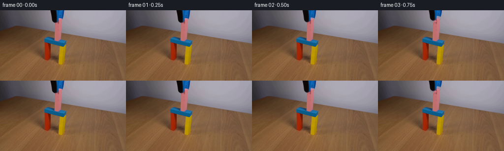
展开代码变化
--- 上一保存版本
+++ 本次保存版本
@@ -105,7 +105,7 @@
return p, a
-def _restore_occluded_block(clean, remove):
+def _restore_occluded_block(clean, source, remove):
"""Complete the few pink top pixels originally hidden by the jaws."""
h, w = remove.shape
yy, xx = np.indices((h, w))
@@ -113,9 +113,12 @@
front = np.zeros((h, w), np.uint8)
# Perspective-consistent top and front faces inferred from all visible
# edges of the photographed cuboid.
- cv2.fillConvexPoly(top, np.array([[118, 17], [128, 19], [124, 27],
- [111, 25]], np.int32), 1)
- cv2.fillConvexPoly(front, np.array([[111, 24], [124, 26], [123, 63],
+ # The source reveals the right/front corner already; extrapolating its top
+ # boundary leftwards yields a slim, nearly horizontal top plane rather than
+ # inventing a tall wedge.
+ cv2.fillConvexPoly(top, np.array([[110, 23], [118, 17], [128, 19],
+ [124, 27]], np.int32), 1)
+ cv2.fillConvexPoly(front, np.array([[110, 23], [124, 26], [123, 63],
[110, 60]], np.int32), 1)
layer = clean.copy()
@@ -130,10 +133,14 @@
layer[top.astype(bool)] = top_rgb[top.astype(bool)]
layer[front.astype(bool)] = front_rgb[front.astype(bool)]
- # Only replace pixels actually hidden by the grabber; every already-visible
- # photographed block pixel remains untouched.
- hidden_block = ((top | front).astype(np.float32) * remove)[..., None]
- return clean * (1 - hidden_block) + layer * hidden_block
+ # Replace hidden pixels plus the few dark/blue contact-shadow remnants
+ # around the jaws. Ordinary photographed pink pixels remain untouched.
+ block = (top | front).astype(bool)
+ nonpink_contact = ((source[..., 0] < 168) |
+ (source[..., 2] > source[..., 0] * .88))
+ repair = block & ((remove > 0) | nonpink_contact)
+ matte = repair.astype(np.float32)[..., None]
+ return clean * (1 - matte) + layer * matte, repair.astype(np.float32)
def generate():
@@ -147,7 +154,7 @@
# into the pink block directly touching the jaws.
remove = alpha.copy()
clean = (first * (1 - remove[..., None]) + wall * remove[..., None])
- clean = _restore_occluded_block(clean, remove)
+ clean, repair = _restore_occluded_block(clean, first, remove)
frames = [first.copy()]
for i in range(1, 20):
@@ -162,7 +169,8 @@
# Preserve every pixel outside the tiny union of old/new grabber
# footprintsâespecially the pink block and colorful support structure.
- union = np.maximum(remove, (moved_alpha > .01).astype(np.float32))
+ union = np.maximum(np.maximum(remove, repair),
+ (moved_alpha > .01).astype(np.float32))
frame = first * (1 - union[..., None]) + frame * union[..., None]
frames.append(np.clip(frame + .5, 0, 255).astype(np.uint8))
候选 06播放与检查图
候选 07播放与检查图
点击播放 · 原生 RGB 像素
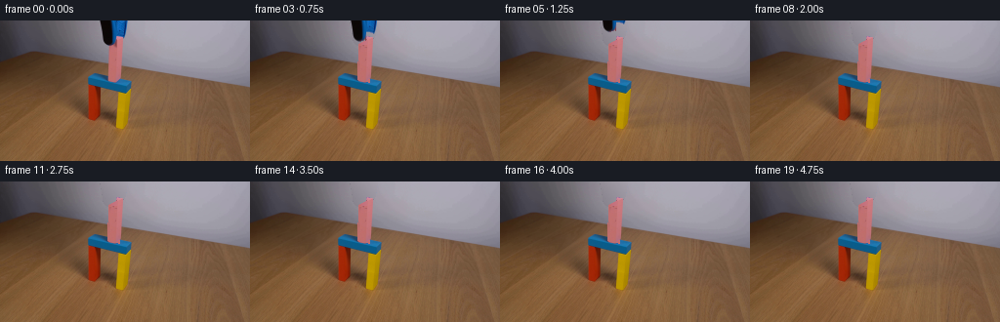
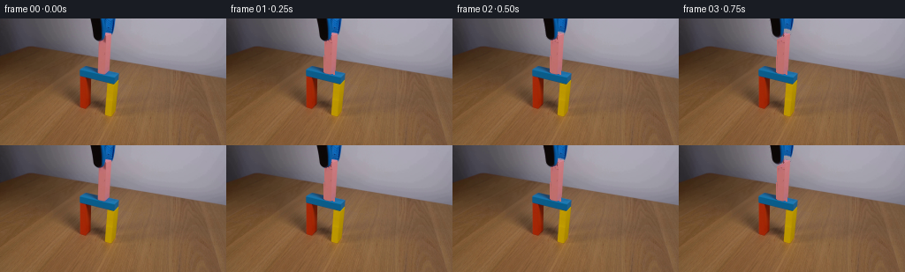
展开代码变化
--- 上一保存版本
+++ 本次保存版本
@@ -116,9 +116,9 @@
# The source reveals the right/front corner already; extrapolating its top
# boundary leftwards yields a slim, nearly horizontal top plane rather than
# inventing a tall wedge.
- cv2.fillConvexPoly(top, np.array([[110, 23], [118, 17], [128, 19],
- [124, 27]], np.int32), 1)
- cv2.fillConvexPoly(front, np.array([[110, 23], [124, 26], [123, 63],
+ cv2.fillConvexPoly(top, np.array([[111, 24], [118, 20], [125, 21],
+ [122, 26]], np.int32), 1)
+ cv2.fillConvexPoly(front, np.array([[111, 24], [122, 26], [122, 63],
[110, 60]], np.int32), 1)
layer = clean.copy()
可观测工具轨迹
实际执行的命令与返回图片。
命令 1exit 0
/bin/bash -lc "cat GENERATION_RULES.md && printf '\\n---PROMPT---\\n' && cat prompt.txt"
命令 2exit 0
/bin/bash -lc "find . -maxdepth 2 -type f -printf '%p %s bytes\\n' | sort"
命令 3exit 0
/bin/bash -lc "python3 - <<'PY'
from PIL import Image
im=Image.open('first_frame.png')
print(im.size,im.mode)
PY
which ffmpeg || true
which blender || true
python3 - <<'PY'
mods=['cv2','numpy','PIL','imageio','scipy']
for x in mods:
try:
m=__import__(x); print(x,'yes',getattr(m,'__version__',''))
except Exception as e: print(x,'no',e)
PY"命令 4exit 0
/bin/bash -lc "python3 - <<'PY'
from PIL import Image
im=Image.open('first_frame.png')
im.resize((1024,576)).save('.tmp/enlarged.png')
PY"命令 5exit 0
/bin/bash -lc "python3 - <<'PY'
from PIL import Image
im=Image.open('first_frame.png')
im.crop((85,0,145,75)).resize((600,750)).save('.tmp/tool_crop.png')
PY"命令 6exit 0
/bin/bash -lc "python3 - <<'PY'
import cv2, numpy as np
im=cv2.imread('first_frame.png')
for y in range(0,70,3):
a=[]
for x in range(90,145):
b,g,r=map(int,im[y,x])
if b>r*1.25 and b>g*1.1 and b>60:c='B'
elif max(b,g,r)<50:c='K'
elif r>b*1.2 and r>g*1.02 and r>80:c='P'
else:c='.'
a.append(c)
print(f'{y:02}', ''.join(a))
PY"命令 7exit 0
/bin/bash -lc "python3 - <<'PY'
import cv2,numpy as np
from collections import Counter
im=cv2.imread('first_frame.png'); hsv=cv2.cvtColor(im,cv2.COLOR_BGR2HSV)
# coords and vals
for y in [0,5,10,15,18,20,22,24,26,28,30,40,50,60]:
print('\\ny',y)
for x in range(102,134,2):
b,g,r=im[y,x]; h,s,v=hsv[y,x]
print(f'{x}:{r:03},{g:03},{b:03}|{h:03},{s:03},{v:03}',end=' ')
print()
PY"命令 8exit 0
/bin/bash -lc 'cat artifact_io.py'
命令 9exit 0
/bin/bash -lc "cat > .tmp/proto.py <<'PY'
import cv2,numpy as np
from PIL import Image
im=cv2.imread('first_frame.png')
hsv=cv2.cvtColor(im,cv2.COLOR_BGR2HSV)
# masks grip, preserving pink/blocks
# black threshold in upper section; manually connected components
maskK=np.zeros(im.shape[:2],np.uint8)
maskK[:28]=((hsv[:28,:,2]<75)&(np.indices(hsv[:28].shape[:2])[1]>95)&(np.indices(hsv[:28].shape[:2])[1]<122)).astype(np.uint8)*255
maskB=np.zeros_like(maskK)
# blue upper grip only y<29, x >110
Y,X=np.indices(maskB.shape)
maskB[((hsv[:,:,0]>90)&(hsv[:,:,0]<120)&(hsv[:,:,1]>80)&(Y<28)&(X>108)&(X<133))]=255
# manually inspect extents
for name,m in [('k',maskK),('b',maskB)]:
n,lab,st,cen=cv2.connectedComponentsWithStats(m)
print(name,st)
cv2.imwrite('.tmp/mask'+name+'.png',m)
PY
python3 .tmp/proto.py"命令 10exit 0
/bin/bash -lc "python3 generate.py && python3 - <<'PY'
import numpy as np
from PIL import Image
f=np.array(Image.open('frames/00.png')); o=np.array(Image.open('first_frame.png'))
print('identical',np.array_equal(f,o),'frames',len(list(__import__('pathlib').Path('frames').glob('*.png'))))
PY"命令 11exit 0
/bin/bash -lc "python3 - <<'PY'
from PIL import Image
for i in [0,2,3,4,5,6,8,11]:
Image.open(f'frames/{i:02}.png').crop((95,0,140,45)).resize((360,360)).save(f'.tmp/crop{i:02}.png')
# make sheet
ims=[Image.open(f'.tmp/crop{i:02}.png') for i in [0,2,3,4,5,6,8,11]]
s=Image.new('RGB',(1440,720))
for j,im in enumerate(ims):s.paste(im,((j%4)*360,(j//4)*360))
s.save('.tmp/crops.png')
PY"命令 12exit 0
/bin/bash -lc "python3 generate.py && python3 - <<'PY'
from PIL import Image
for i in [0,2,3,4,5,6,8,11]:
Image.open(f'frames/{i:02}.png').crop((95,0,140,45)).resize((360,360)).save(f'.tmp/crop{i:02}.png')
ims=[Image.open(f'.tmp/crop{i:02}.png') for i in [0,2,3,4,5,6,8,11]]
s=Image.new('RGB',(1440,720))
for j,im in enumerate(ims):s.paste(im,((j%4)*360,(j//4)*360))
s.save('.tmp/crops2.png')
PY"命令 13exit 0
/bin/bash -lc "python3 generate.py && python3 - <<'PY'
from PIL import Image
for i in [0,2,3,4,5,6,8,11]:
Image.open(f'frames/{i:02}.png').crop((95,0,140,45)).resize((360,360)).save(f'.tmp/crop{i:02}.png')
ims=[Image.open(f'.tmp/crop{i:02}.png') for i in [0,2,3,4,5,6,8,11]]
s=Image.new('RGB',(1440,720))
for j,im in enumerate(ims):s.paste(im,((j%4)*360,(j//4)*360))
s.save('.tmp/crops3.png')
PY"命令 14exit 0
/bin/bash -lc "python3 - <<'PY'
import generate,cv2,numpy as np
f=cv2.cvtColor(cv2.imread('first_frame.png'),cv2.COLOR_BGR2RGB); a=generate._soft_component_mask(cv2.cvtColor(f,cv2.COLOR_RGB2BGR))
for y in range(14,29):
print(y,''.join('#' if a[y,x] else '.' for x in range(100,133)))
PY"命令 15exit 0
/bin/bash -lc "python3 generate.py && python3 - <<'PY'
from PIL import Image
for i in [0,2,3,4,5,6,8,11]:
Image.open(f'frames/{i:02}.png').crop((95,0,140,45)).resize((360,360)).save(f'.tmp/crop{i:02}.png')
ims=[Image.open(f'.tmp/crop{i:02}.png') for i in [0,2,3,4,5,6,8,11]]
s=Image.new('RGB',(1440,720))
for j,im in enumerate(ims):s.paste(im,((j%4)*360,(j//4)*360))
s.save('.tmp/crops4.png')
PY"命令 16exit 0
/bin/bash -lc "python3 generate.py && python3 - <<'PY'
import numpy as np
from PIL import Image
from pathlib import Path
orig=np.asarray(Image.open('first_frame.png'))
fs=np.stack([np.asarray(Image.open(f'frames/{i:02}.png')) for i in range(20)])
print(fs.shape,fs.dtype,'f0 exact',np.array_equal(fs[0],orig),'range',fs.min(),fs.max())
print('changed px counts',[int(np.any(fs[i]"'!=orig,2).sum()) for i in range(20)])
print('"'outputs',[(p.name,p.stat().st_size) for p in map(Path,['pixels.npz','index.html','inspection.png','transition_check.png'])])
PY"视觉工具实际返回图片 1

视觉工具实际返回图片 2
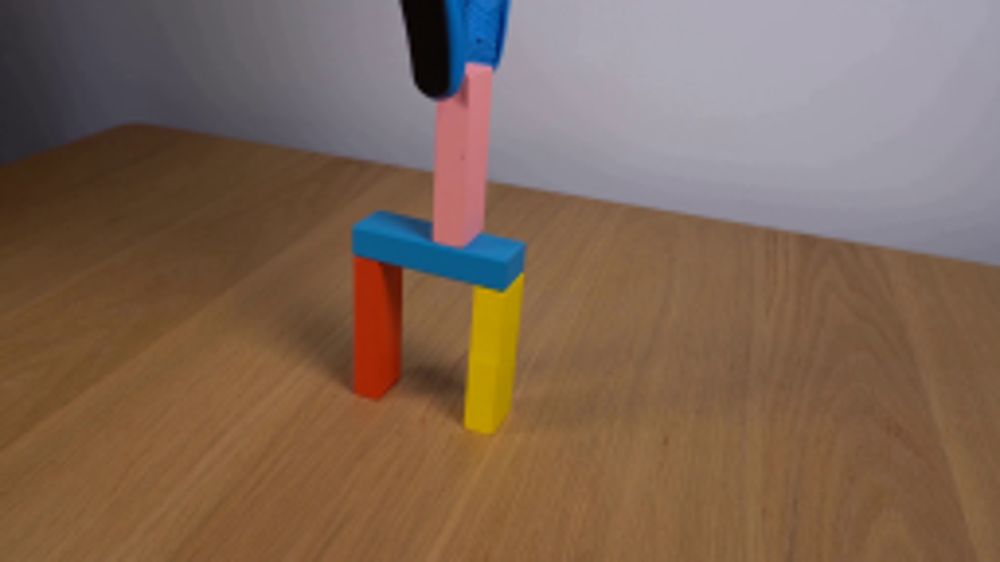
视觉工具实际返回图片 3
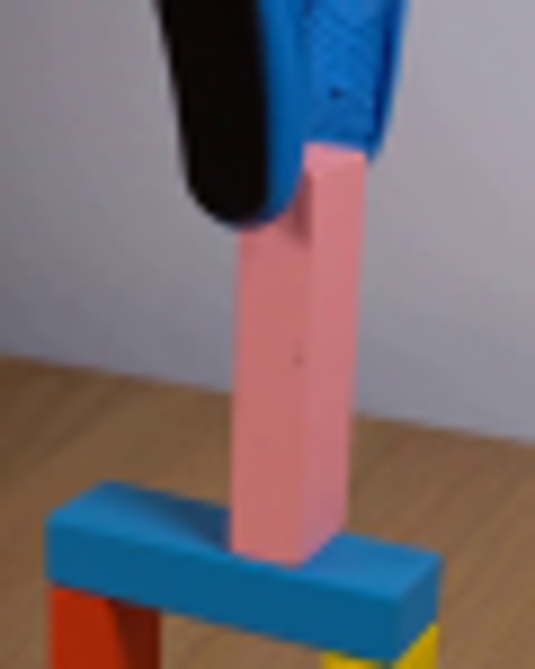
视觉工具实际返回图片 4

视觉工具实际返回图片 5
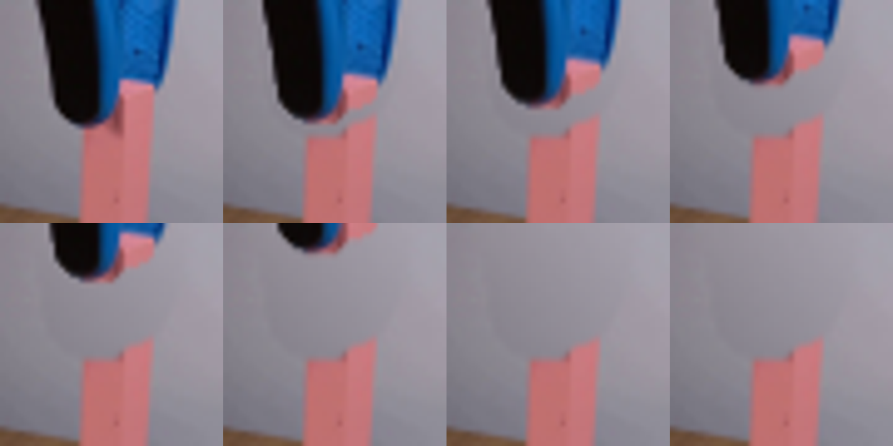
视觉工具实际返回图片 6
视觉工具实际返回图片 7
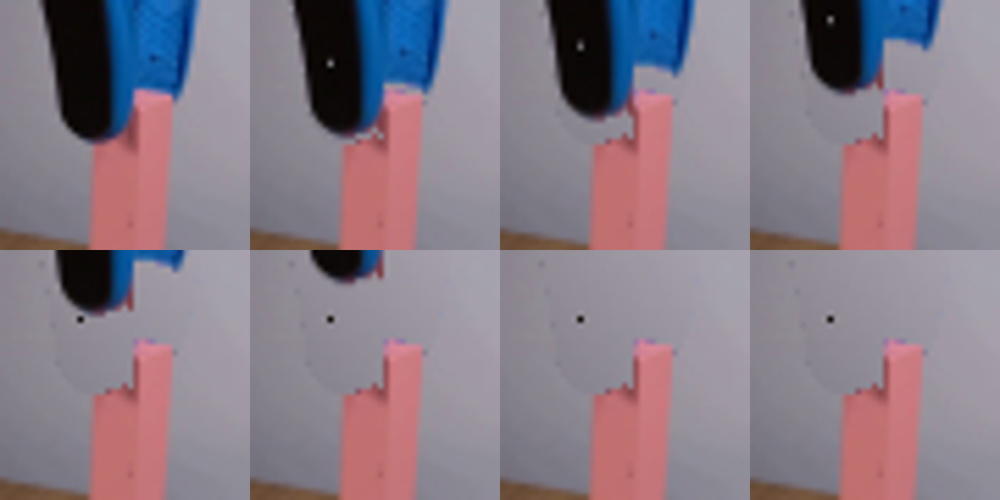
视觉工具实际返回图片 8
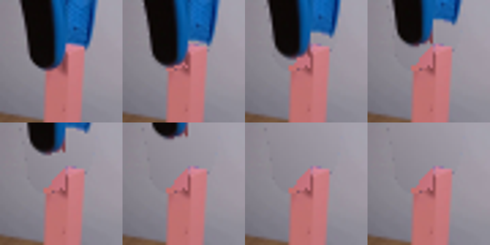
视觉工具实际返回图片 9
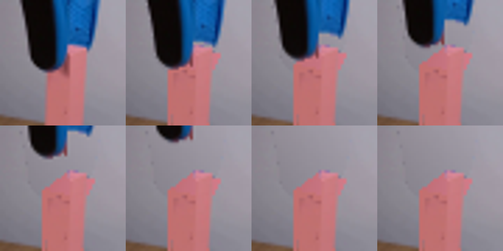
视觉工具实际返回图片 10

保存候选 7 份；完成命令 16 次；可验证图片返回 10 张。原始 API 响应与完整日志保留在本地。